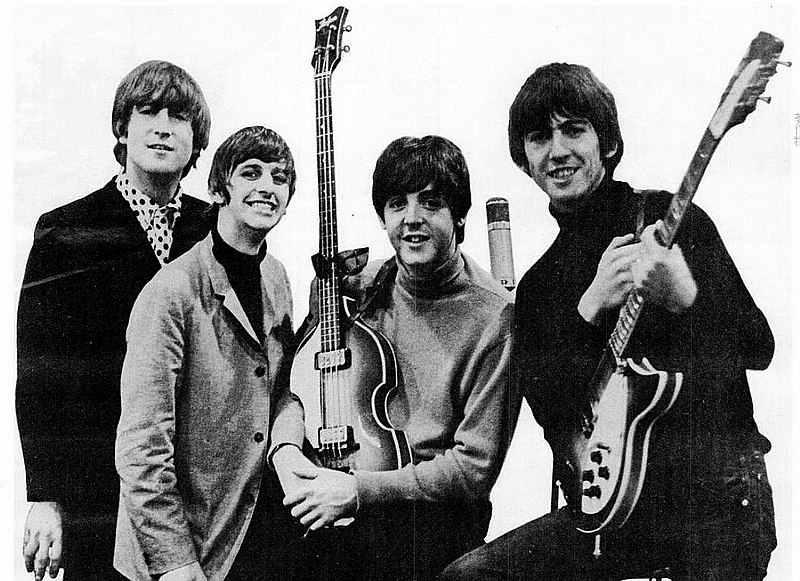

The Beatles

The Beatles fue una banda de pop/rock inglesa activa durante la década de 1960, y reconocida como la más exitosa comercialmente y la más famosa en la historia de la música popular. Formada en Liverpool, estuvo constituida desde 1962 por John Lennon (guitarra rítmica, vocalista), Paul McCartney (bajo, vocalista), George Harrison (guitarra solista, vocalista) y Ringo Starr (batería, vocalista). Enraizada en el skiffle y el rock and roll de los años 1950, la banda trabajó más tarde con distintos géneros musicales, que iban desde las baladas pop hasta el rock psicodélico, incorporando a menudo elementos clásicos, entre otros, de forma innovadora en sus canciones. La naturaleza de su enorme popularidad, que había emergido primeramente con la moda de la «Beatlemanía», se transformó al tiempo que sus composiciones se volvieron más sofisticadas. Llegaron a ser percibidos como la encarnación de los ideales progresistas, extendiendo su influencia en las revoluciones sociales y culturales de la década de 1960.
Con una formación inicial de cinco componentes que incluía a Lennon, McCartney, Harrison, Stuart Sutcliffe (bajo) y Pete Best (batería), la banda construyó su reputación en los clubes de Liverpool y Hamburgo sobre un período de tres años a partir de 1960. Sutcliffe abandonó la formación en 1961, y Best fue reemplazado por Starr al año siguiente. Establecidos como grupo profesional después de que Brian Epstein les ofreciera ser su representante, y con su potencial musical mejorado por la creatividad del productor George Martin, lograron éxito comercial en el Reino Unido a finales de 1962 con su primer sencillo, «Love Me Do». A partir de ahí, fueron adquiriendo popularidad internacional a lo largo de los siguientes años, en los cuales hicieron un extenso número de giras hasta 1966, año en que cesaron la actividad en vivo para dedicarse únicamente a la grabación en el estudio hasta su disolución en 1970. Después, todos sus integrantes se embarcaron en exitosas carreras independientes de diversa duración. Lennon sería asesinado a las afueras de su casa de Nueva York en 1980, y Harrison fallecería de cáncer en 2001. McCartney y Starr, los dos miembros sobrevivientes, aún permanecen musicalmente activos.